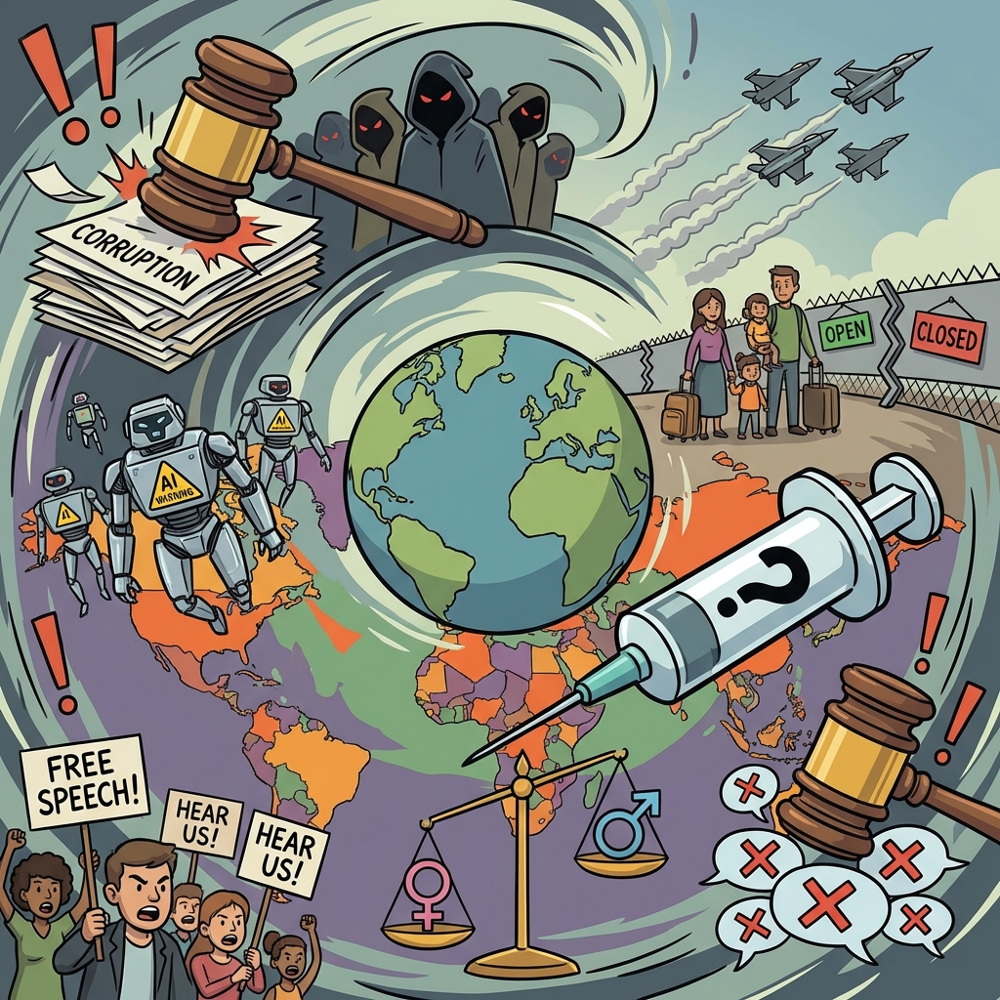

The Daily Globe: Government Corruption and Trafficking Networks, Afrikaner Refugee Program Struggles, and Criminalization of Gender Ideology Criticism
Published on 2026-02-21

World
- Government Corruption and Trafficking Networks
High-profile scandals involving Epstein-related conspiracies, child trafficking, and organ trafficking networks dominate global concerns, with 90% of news stories tied to these themes.
- AI Threats and Technocracy Concerns
Growing fears about artificial intelligence risks, technocratic governance, and regulatory failures in the EU spark intense debate on accountability and human rights.
- Immigration Policies Amid Geopolitical Tensions
Immigration debates intensify due to ongoing conflicts in Ukraine and the Middle East, with polarized views on refugee resettlement and border policies.
- China's 6th Generation Fighter Jets
Military advancements by China spark global security concerns as the nation develops next-generation fighter aircraft technology.
- Russia's Cancer Vaccine Claims
Russia announces cancer vaccine breakthrough, facing international skepticism over transparency and ethical standards.
USA
- Afrikaner Refugee Program Struggles
White South African refugees fast-tracked under Trump-era policies face harsh living conditions in motels and substandard housing, raising questions about fairness and effectiveness.
- U.S. Military Aid to Israel Under Scrutiny
Rep. AOC and others demand compliance with Leahy Laws barring aid to units implicated in human rights abuses, clashing with pro-Israel advocates amid Gaza tensions.
- Detransitioner Awarded $2 Million Judgment
A landmark lawsuit awards $2 million to a detransitioner, escalating debates over gender-affirming care for minors and surgeon liability.
- Transgender Athletes in Women's Sports
Intensifying culture war debates over fairness in women's sports as lawsuits and legislation target transgender participation policies.
- Epstein Scandal Fallout and UFO Declassification
Prince Andrew's UK arrest renews scrutiny of Epstein's network, while Trump pushes UFO/UAP file declassification amid tensions with Obama.
- LGBTQ+ History Erasure at National Parks
Removal of pride flags at sites like Stonewall leads to lawsuits accusing the administration of erasing queer history.
Brazil
- Criminalization of Gender Ideology Criticism
A veterinary student faces up to 10 years in prison for social media posts criticizing gender ideology, sparking international free speech debates.
- Carnival Lula Tribute Political Controversy
A samba school's tribute to President Lula at Rio Carnival angers opposition, who claim it's an illegal early election campaign.
- Elon Musk Challenges Brazilian Judiciary
Musk's involvement in censorship debates and support for Flávio Bolsonaro positions Brazil as a global example of online suppression.
- Trans Tyranny International Backlash
Wall Street Journal and international media frame Brazil's treatment of gender dissenters as tyranny, amplifying global conservative attention.
- Free Speech vs. Hate Speech Laws
Debates rage over Brazil's judicial system balance between protecting transgender rights and criminalizing biological sex assertions.
Topic Index
- government-corruption
- human-trafficking
- artificial-intelligence
- immigration-policy
- military-technology
- refugee-crisis
- foreign-aid-accountability
- gender-identity-debate